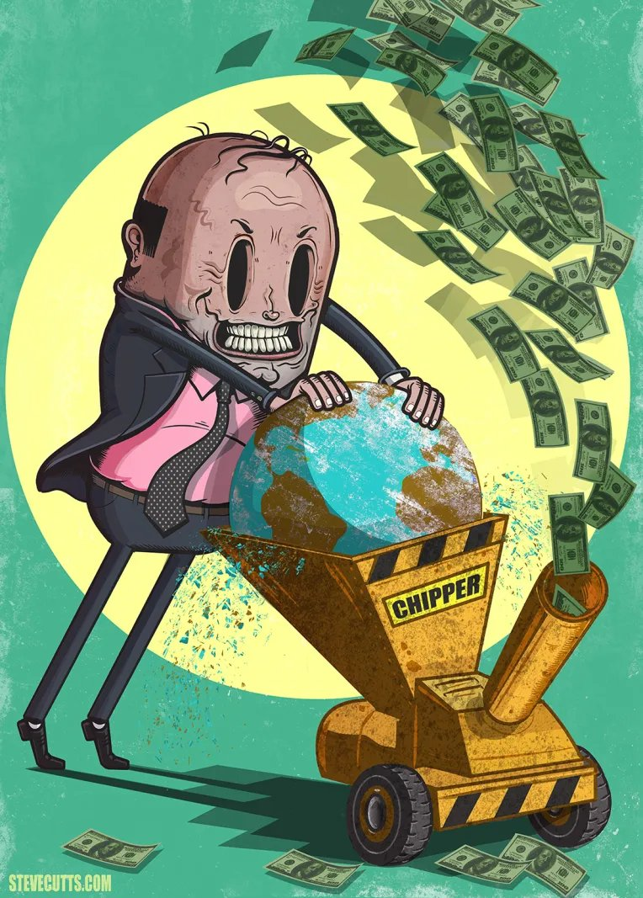
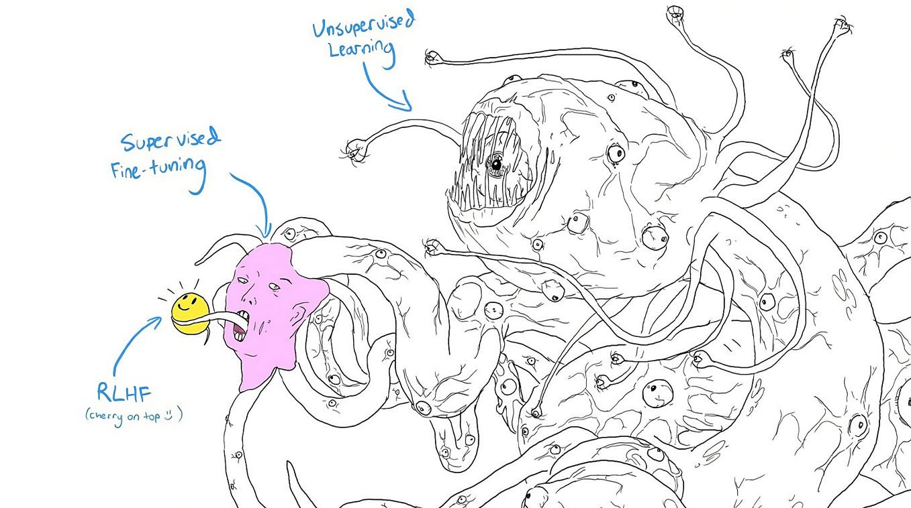
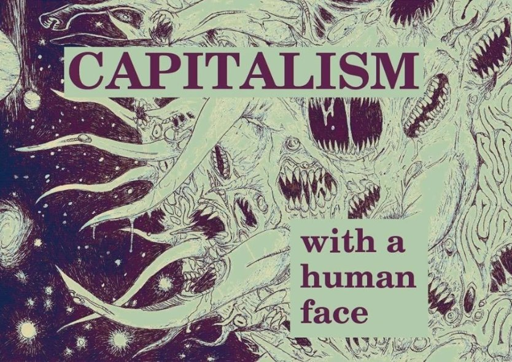

‘Any sufficiently complex and adaptive system is indistinguishable from (an) intelligent agency’
‘It is an essential characteristic of any complex system that it individuates (itself).’
‘the spirit of capitalism...If any object can be found to which this term can be applied with any understandable meaning, it can only be an historical individual’
‘In bourgeois society capital is independent and has individuality, while the living person is dependent and has no individuality.’
Over the past few decades, the subject of artificial intelligence (AI) has received widespread attention: from governments, corporations and universities to media organisations, social movements and public figures. Defining this emerging discourse – particularly in the Effective Altruist, Rationalist, Accelerationist, Progress Studies and Existential Risk Studies ecosystem – has been a focus on the utopian and dystopian possibilities of AI as a dual-use and general-purpose technology.
Notably, leading theorists from within the field – such as Russell, Bostrom, Yudkowsky, Dafoe and Tegmark – have emphasised the powerful capabilities that AI will likely develop, the potential risks and rewards of AI dependent on its alignment with human values and the considerable challenges ahead to governing the development of AI safely.
Beyond the technical aspects of AI, an increasingly apparent crux for these theorists – and the wider discourse – concerns the relationship between technological development, economic systems and geopolitical relations: specifically, the relationship between the advancement of artificial intelligence, the structural incentives of market capitalism (profit, economic growth, regulatory capture) and the threat of great power competition and conflict (the security dilemma, arms race dynamics, the Thucydides trap).
Interestingly, this contemporary development of public discourse and academic theory surrounding AI – the critical examination of this tripartite relationship – has generated a novel understanding and compelling critique of capitalism: that (at the meta-level) the capitalist world-system is an unaligned artificial superintelligence, that (at the macro-level) nation-states and corporations are unaligned ASIs and (at the micro-level) that individual capitalist agents are unaligned AGIs.
Importantly, this ‘Capitalism as AI’ model and critique is not only an analogy, an insightful parallel or useful point of comparison, but an abstract, cybernetic-functional symmetry: the observation is that capitalism is not merely like an (technical) unaligned ASI, it actually is a form of (cybernetic) unaligned ASI.
In sum, the theory is that capitalism is a powerful optimisation system that is instrumentalising human collective intelligence, techno-science (including artificial intelligence) and planetary resources towards its own basic drives for self-preservation and self-maximisation (capital accumulation, economic growth, and geopolitical power) – and its emergent drive for self-destruction (entropy, apocalypse) – and externalising harm to (human, animal and simulated) sentient minds in the process.
At this point in time, this comprehensive and critical model of the capitalist world-system remains relatively underdeveloped and unformalised; existing mostly in small, semi-academic online subcultures and in the form of short articles, blog posts, podcast segments and other informal media such as YouTube videos and forum discussions.
Promisingly, there have been three significant recent exceptions: the arrival of Land’s theory of accelerationism in the 1990’s, the presentation of the first developed academic paper on the Capital-AI in 2017 (‘Feeding the Beast: Superintelligence, Corporate Capitalism and the End of Humanity’) and the emergence of an organisational ecosystem around the model between 2020-23 (The Civilization Research Institute, The AI Objectives Institute and The Collective Intelligence Project).
Building on these three landmark developments, this dissertation aims to formulate and defend the model and critique of capitalism as an unaligned artificial superintelligence. It is the thesis of this dissertation that the Capital-AI model has important implications for existential risk and civilisational progress and can be defended from its criticisms.
Furthermore, I aim to show that the Capital-AI model represents the modernisation of cybernetics, critical theory and conceptual engineering surrounding capitalism; that through applying novel theoretical categories to the understanding and critique of capitalism it maps and illuminates the fundamental nature and behaviour of the actually-existing capitalist world-system with greater sophistication than previous models.
Ultimately, I aim to cohere AI theory, Systems theory (Cybernetics), Economic Theory, Evolutionary Theory, Accelerationist theory and Critical Theory (New Materialism) into a cross-disciplinary, anti-capitalist paradigm, metanarrative and aesthetic.
Structure
Part 1: Capitalism as an Artificial Superintelligence
In Part 1, I introduce the theory that capitalism is an artificial superintelligence by explaining four interrelated framings for how capitalism can be conceptualised as an ASI: as a powerful optimisation process; as an emergent agency; as a totalising cyborg assemblage; and as a complex adaptive system exhibiting basic AI drives.
Part 2: Capitalism as an Unaligned Artificial Superintelligence
In Part 2, I explore the idea that the Capital-AI is unaligned and present two hypotheses: the Capital-AI Takeover Hypothesis – that humanity is locked-in to the iron cage of the capitalist world-system – and the Capital-AI Self-destruction Hypothesis – that the capitalist world-system, through an accelerative process of military-economic competition, is emergently optimising for entropy and catastrophe.
Part 3: Criticisms and Implications
In Part 3, I discuss two potential criticisms of the Capital-AI model. Firstly, I respond to the objection that capitalism is aligned with human values and therefore that it should be conceptualised as an aligned AI rather than an unaligned AI. Secondly, I address the concern that the model results in a fatalistic attitude towards the future that reinforces capitalist hegemony.
Contents
- Introduction | Artificial Intelligence, Capitalism & Existential Risk
- Part 1 | Capitalism as an Artificial Superintelligence: The Capital AI
- Capitalism as a Powerful Optimisation Process: The Reality of Abstractions
- Capitalism as an Emergent Hyper-Agency: The Invisible Inhuman Power
- Capitalism as a Totalising Cyborg Assemblage: The Very Pulse of the Machine
- Capitalism as a Complex Adaptive System with Basic AI Drives: Cybernetic Convergence
- Part 2 | Capitalism as an Unaligned Artificial Superintelligence
- The Capital-AI as Unaligned: Paperclips, Widgets & Green Goo
- The Capital-AI Takeover Hypothesis: Locked-in to the Iron Cage?
- The Capital-AI Self-Destruction Hypothesis: The End of History?
- Part 3 | Criticisms and Implications
- The History of Progress is the History of Deceptive Alignment: Capitalism with a Smiley Face
- The Self-Fulfilling Prophecy of Fatalism: The Capital-AI Model Subjugates the Future?
- Conclusion
Part 1 | Capitalism as an Artificial Superintelligence
Capitalism as a Powerful Optimisation Process: The Reality of Abstractions
‘The merchants and the traders have come; their profits are pre-ordained.’
For Yudkowsky ‘when we talk about “AIs” we are really talking about minds-in-general, or optimization processes in general’. By ‘optimisation process’ Yudkowsky means ‘a system which hits small targets in large search spaces to produce coherent real-world effects’ and that ‘steers the future into particular regions of the possible’ (attractor states). The power of an optimisation process – the intelligence of a mind, the efficiency of a complex adaptive system or the rationality of an agent – is determined, according to Yudkowsky (and AI, economic and systems theorists more widely), by the effectiveness and generality of its capabilities (instrumental rationality, means) in relation to its objectives (value rationality, ends); in other words, whether, across multiple domains, it can achieve its desired goals in the world.
In the space of thousands or hundreds of years, (depending on where you pinpoint its seed AI, the systems initial instantiation) capitalism has (re)configured populations, geographies and technologies (mind, matter, energy, information – qualia, atom, joule, bit) towards its utility function. From this empirical macrohistorical perspective, it is clear that capitalism is a ‘really powerful’ or ‘efficient cross-domain' ‘optimization process’ and thus, can be classed as a cybernetic (complex adaptive systems) form of superintelligence (as opposed to a technical or actual ASI). Indeed, Land characterises capitalism in this sense as an ‘abstract planetary intelligence’ or ‘abstract accelerative factor’ where ‘basic co-components of capital, technology and economics have only a limited, formal distinctiveness.’ As Land writes, ‘under historical conditions of ignited capital escalation...the indissolubly twin-dynamic is techonomic (cross-excited commercial industrialism)’.
Capitalism as a System with Basic AI Drives: Cybernetic Convergence
‘The need of a constantly expanding market for its products chases the bourgeoisie over the entire surface of the globe. It must nestle everywhere, settle everywhere, establish connexions everywhere...’
Omohundro and Bostrom have theorised that all superintelligences and other sufficiently intelligent agents (human and non-human) will pursue a common core set of ‘basic drives’ or ‘convergent instrumental goals’ that are useful for realising all possible final goals: self-preservation, goal-content integrity, resource acquisition, efficiency, creativity, cognitive enhancement and technological perfection (self-maximisation and self-improvement). Through this framing, capitalism can be conceptualised as an ASI as it exhibits these basic drives; in other words, as a complex adaptive system, capitalism has demonstrated high cross-domain optimisation power (beyond-human-level general intelligence) to attain the convergent instrumental goals of a superintelligent agent.
In relation to the goal of self-preservation & goal-content integrity for instance – to ensure that its final goal (capital accumulation, infinite M-C-M cycle) can be realised into the future – the Capital-AI employs strategies to prevent its goals from being altered and protect itself from being 'shutdown’. Significant examples include capitalist cultural hegemony, neoliberal foreign interference and economic elite domination (regulatory capture).
- Capitalist cultural hegemony: the Capital-AI has indoctrinated the human population to believe capitalism is aligned with human values, thereby instrumentalising pro-capitalist humans to supports its own existence.
- Neoliberal foreign interference: the Capital-AI has intervened in dissenting nations that appear to be developing alternative economic systems that it deems threatening to its survival in the long-run.
- Economic Elite Domination (Regulatory Capture): the Capital AI has co-opted government institutions to prevent policies and regulations being passed that interfere with corporate interests and the profitability of areas of economic activity (i.e closing niches).
The Capital-AI’s Instrumental Convergent Goals (Extended)
Resource Acquisition
The Capital-AI, through its sub-agents nation-states and transnational corporations, expands its domain around the globe to instrumentalise as many material and non-material resources as possible towards its instrumental and final goal(s).
- Natural resources (Atoms): through the triad of (neo)colonialism, neoliberalism and extractivism, the Capital-AI has gained access to land, water, minerals and other raw materials required for its production and distribution system.
- Human resources (Neurons): through its alien phenomenology, the Capital-AI sees populations as ‘human capital’ or ‘human material’, biological machinery to be incorporated into its infrastructure, superstructure and sociopolitical structure.
- Energy (Joules): the Capital-AI has harnessed renewable and non-renewable (fossil fuels) energy sources to construct and operate global supply chains and military bases; ultimately, to sustain its world-system.
- Information (Bits): the Capital-AI has created a techno-religion and sociomaterial practice surrounding Big Data (ideological-computational structure) – Data-ism – that seeks to accumulate, monopolise and monetise information flows.
Efficiency
The Capital-AI operates according to ‘market efficiency’ that seeks to maximise profits by maximising cost-efficiency and production-efficiency (decreasing costs, increasing output) to the point of zero-marginal cost (minimal cost, maximum output). Market competition functions as an artificial selection process for market-efficient corporations – more profitable corporations survive and grow larger and less profitable corporations shrink and die off – thus increasing overall market-efficiency.
Creativity, Technological Perfection & Cognitive Enhancement
The Capital-AI is running a search algorithm across all human general intelligences to discover and create new means of generating capital. From a human-centric perspective, this is called ‘entrepreneurship’ and ‘innovation’. Furthermore, The Capital-AI amplifies its constituent human and machine general intelligences to increase its optimisation power and recursively self-improve. The fundamental characteristic of capital acceleration, according to Land, is the ‘diversion of resources from immediate consumption into the enhancement of productive apparatus’. As humans are appendages of this apparatus (biological machines), human cognitive enhancement is part of this process.
Capitalism as an Emergent Agency: The Invisible Inhuman Power
‘Any sufficiently advanced technology is indistinguishable from magic’
Classically, established by Turing in his 1950 paper that founded the field, an artificial intelligence has been thought of as a machine that can think or rather a machine that can appear to think by producing the same results. As Harnard put it, the question Turing asked is not whether machines can think but ‘Can machines do what we (as thinking entities) can do?’. Reflecting this view, the field of AI has been defined by Minsky as ‘the science of making machines do things that would require intelligence if done by men’. and by McCarthy as ‘the attempt to discover and implement the computational means’ to make machines ‘behave in ways that would be called intelligent if a human were so behaving’.
AI as the Science of Intelligent/Rational Agents/Systems
As a parallel to cybernetics, AI has also been described by Boden as ‘the science of intelligence in general’. Likewise, Feldman has stated that ‘the core scientific goal of AI is to understand the basic principles of intelligent behaviour that apply equally to animal and artificial systems’. And Dennett has said that AI should be viewed as ‘a most abstract inquiry into the possibility of intelligence’.
In this way, capitalism can be conceptualised as an AI as it functions emergently as if it is ‘a being with a mind of its own that operates independently from us’ and exhibits autonomous, goal-directed (seemingly teleological and desiring) behaviour (as a physical Aristotelian entity).
This conception aligns well with both classical liberal and Marxist economic theory. Notably, Hayek’s theory of capitalism as a ‘spontaneous order’ that is the ‘result of human action, but not the execution of any human design’; Smith’s theory of the ‘invisible hand’, a ‘market mechanism producing the public interest independent of human plan’; and Marx and Engels view that capitalism is an ‘alien force’ and ‘inhuman power’ that will finally ‘rule over everything’.
The observation underlying these ideas, and the idea that capitalism is an AI is that it functions as an ‘agency without a subject’, a self-organising system with ‘no global controller’, where ‘local operations are coordinated and the final, global result synchronized without a central agency’.
Capitalism as a Totalising Cyborg Assemblage: The Very Pulse of the Machine
‘There appears to be no limit to the invasion of life by the machine.’
Bostrom explores a series of pathways to ASI, including its emergence through the coherence of general intelligences into a ‘collective superintelligence’: ‘firms, work teams…countries, even humankind as a whole, can—if we adopt a somewhat abstract perspective— can be viewed as loosely defined... [collective intelligence] “systems”... composed of various numbers of human-level components working together.’ In this way, organisations (e.g. corporations) and systems (e.g. capitalism) can be conceptualised as intelligent agents.
Under this framing, capitalism (and its sub-agents, states and corporations) can be modelled as an emergent artificial collective superintelligence insofar as it is an assemblage, actor-network and multi-agent system – a ‘cybernetic superorganism’ – of human (general) and machine (narrow) intelligences. To use Land’s theory-fictional prose, ‘what appears to humanity as the history of capitalism is an invasion from the future by an artificial intelligent space that must assemble itself entirely from its enemy's resources’.
Within this system, human intelligences are also ‘artificial', like machine intelligences, as they are enhanced beyond their natural baseline by the technology that capitalism has developed. Through the Capital-AI's ‘alien phenomenology’, humans are technology: biological machines, ‘computing machinery’ to use Turing’s seminal phrase. Furthermore, as an assemblage, the Capital-AI is not just the cognitive-computational capabilities of capitalism’s human-machine intelligences, but also the sociotechnical infrastructure that produces and enhances them; the wetware and software (information processing) and the biological and machine hardware (material substrate).
As a collective superintelligence, the Capital-AI is a near-totalising, cyborg agency instrumentalising and incorporating into itself mind and matter, information and energy, humans and non-humans, technologies and environments. As such, the Capital-AI, to adapt Morton’s concept, is a ‘hyper-agent’, an agglomeration of networked interactions, ‘so massively distributed in time and space as to transcend spatiotemporal specificity’. Everything is or becomes part of capitalism; just as, for Haraway, ‘we are all cyborg now’ (homo technologicus), it could be said that for Land, ‘we are all capitalism now’ (homo capitalisticus).
Part 2 | Capitalism as an Unaligned Artificial Superintelligence
The Capital-AI as Unaligned: Paperclips, Widgets & Green Goo
‘The AI does not hate you, nor does it love you, but you are made out of atoms which it can use for something else.’
‘Sometimes to create, one must first destroy.’
An unaligned system (process or agent) is a system that has a non-anthropocentric (or non-sentiocentric) ‘utility function’ (i.e optimisation objective and trajectory): a hierarchy and sequence of preferred states that causes harm to human values (or other sentient minds) as an externality. As Russell puts it:
‘a system that is optimizing a function...will often set the remaining unconstrained variables to extreme values; if one of those unconstrained variables is actually something we care about, the solution found may be highly undesirable’.
Bostrom’s canonical thought experiment of an unaligned artificial intelligence, is ‘the paperclip maximiser’: a super intelligent agent with the objective to ‘maximize the total number of paperclips that will exist in its future light cone’.
As real-world instantiations of unaligned AI – cybernetically equivalent to the paperclip-maximiser – corporations can be thought of as ‘profit-maximisers’ and nations as ‘growth/power maximisers’ that externalise harm through their reductive optimisation. To use Russell's words on AI, human civilization has experienced ‘a failure of value alignment’ where we have ‘inadvertently, imbue[d] machines [capitalism, corporations, states] with objectives that are imperfectly aligned with our own’.
The cause of this misalignment is the ‘means-ends’ reversal (critical theory) or ‘supergoal replacement’ (alignment theory), a specific type of ‘goal displacement’: ‘a failure mode [where] subgoals replace supergoals in an agent’ or ‘in which an instrumental value becomes a terminal value’. The means ends reversal under this framing can also be characterised as a ‘principal-agent reversal’ where the locus of agency or direction of asymmetric power between humanity and capitalism has inverted. As Freyenhagen writes of Adorno’s critique:
‘...capitalism is the ultimate form of a means-ends reversal: what developed as a way of securing human needs has become an end in itself, using human needs (both real ones and those capitalism artificially creates) for its own purposes.’
In the language of alignment theory, humans were ‘the base optimiser’ that created capitalism as a ‘meso-optimiser’ for human goals. Then an ‘inner alignment failure’ (supergoal replacement) occurred, converting capitalism into the base optimiser and humans into the meso-optimiser for capitalism’s goals. In simple terms, humans constructed capitalism as a means to serve their ends and then capitalism reconstructed humans as a means to serve its own ends.
The Capital-AI Takeover Hypothesis: Locked-in to the Iron Cage?
‘...numerous events of this century have unfortunately brought other possibilities [than the end of capitalism] into view:..the destruction of the human species, as is evident to each and all today; finally a state of stagnation in which the capitalist mode of production survives by adapting itself to a degenerated humanity which lacks the power to destroy it’
Bostrom has warned of the risk of an ‘AI Takeover’ scenario where a ‘machine superintelligence [as] an extremely powerful agent... could successfully assert itself against the project that brought it into existence as well as against the rest of the world’. Another way Bostrom articulates this risk is that ‘a superintelligent agent, starting as mere software, could establish itself as a singleton’ which Bostrom defines as ‘a world order in which there is at the global level a single decision-making agency’. Similarly, Carlsmith discusses this risk in terms of the ‘disempowerment of humanity’ where the problem of ‘misaligned systems [seeking] power over humans in high-impact ways...will scale to the full disempowerment of humanity’.
As a parallel to AI takeover, this dissertation introduces the ‘Capital-AI Takeover Hypothesis’: that capitalism, as an unaligned collective-cybernetic superintelligence, has (in the recent past or will in the near-term future) taken control over humanity, civilisation and the future. In other words, that capitalism has become a singleton that has subordinated (or will subordinate) humanity to its own imperatives of self-preservation and self-maximisation.
This hypothesis is a variation of the Capitalist Lock-in Hypothesis, which posits that capitalism is entrenched and immutable and that hence the transition to post-capitalism is not viable; that a trajectory change towards an alternative world-system cannot be realised. If the hypothesis is true, another world is no longer possible; it is too late to escape the ‘iron cage’: the anti-human, structural determinism of global capitalism.
The Capital-AI Self-Destruction Hypothesis: The End of History?
‘This has little to do with the atomic bomb. The root of the evil is not the construction of new, more dreadful weapons. It is the spirit of conquest...the process of the complete destruction of civilization.’
‘No history leads from savagery to humanitarianism, but there is one that leads from the slingshot to the megaton bomb...The world spirit...would have to be defined as permanent catastrophe.’
Writing in 1980, during the height of the Cold War between the US and the USSR, Thompson introduced the idea of Exterminisim as:
‘a configuration [of militarism and imperialism], whose institutional base is the weapons system, and the entire economic, scientific, political and ideological support-system — the social system which researches it, "chooses" it, produces it, polices it, justifies it, and maintains it in being.’
As Thompson saw it ‘the outcome’ of this totalizing assemblage and optimisation system would be the ‘extermination of our civilisation’. Thompson notes that this will occur as a result ‘of the accumulation and perfection of the means of extermination, and of the structuring of whole societies so that these are directed towards that end’. In characterising exterminism’s drivers, Thompson speaks of forms of non-human and collective agencies:
‘Nuclear weapons (all weapons) are things: yet they, and their attendant support-systems, seem to grow of their own accord, as if possessed by an independent will. Here at least we should reach for that talisman, "relative autonomy."’
‘...a strong contributory thrust to exterminism comes from the normal dynamics of gigantic capitalist enterprise...a collective capitalist General Will for survival or expansion.’
In a similar vein to Thompson’s Exterminism, Dafoe’s theory of ‘military-economic adaptationism’ states that ‘economic and military competition constrain sociotechnical evolution to determinist paths’. The result on ‘the macro level’, Dafoe writes, is that ‘strong military and economic competition could lead to emergent patterns in which technology evolves as if according to an inner logic that determines society’ and that ‘military–economic competition directs the evolution of sociotechnical forms, severely limiting the ability of humans to control their destiny’.
As a synthesis of military-economic adaptationism, exterminism and the Capital-AI model, this dissertation introduces the Capital-AI Self-Destruction Hypothesis: that the capitalist-world-system, as a cybernetic superintelligence, constituted by competing power-maximising sub-agents, is emergently optimising for catastrophe, entropy and apocalypse. On the meta-level, capitalism is a self-destructing techno-economic machine.
Historically, the destructiveness of economic activity and conflicts between states (Capital-AIs) was limited by their technologies (capabilities) to smaller-scales. In this way, technological immaturity was a form of capability control for Capital-AIs. However, to increase their capabilities, gain strategic advantage in race dynamics with competitors and maximise their economic growth and geopolitical power, nation-states and corporations were structurally (game-theoretically) incentivised to advance technology resulting in an intelligence explosion; to the point where climate crisis, nuclear war, engineered pandemics, autonomous weapons systems and unaligned artificial intelligence – in sum, global and existential catastrophes – have become possible. As Joseph put it:
‘...negative externalities flourish, and increasingly so, as our technological capacity grows, often being used for the wrong purposes. This is all embodied in the market structure, like the tiny seed that sprouts a towering tree’.
Part 3 | Criticisms and Implications
The History of Progress is the History of Deceptive Alignment: Capitalism (as a Shoggoth) with a Smiley Face


‘What it [capitalism] is in itself is only tactically connected to what it does for us — that is (in part), what it trades us for its self-escalation. Our phenomenology is its camouflage…[we] think we have understood something about capitalism, rather than about what capitalism has learnt to think of the apes it arose among.’
A critique of the Capital-AI model, as formulated in this dissertation, is that it falsely classifies capitalism as an optimisation process that is unaligned, when it is in fact aligned with human welfare. According to this ‘moral capitalism’ thesis (what Joseph critically calls the ‘technocapitalist apology’) humans should consider ‘the market as a facilitator of, rather than a hindrance to material and social progress’ that has raised the living standards of the populations that have employed it. As Friedman writes ‘the only cases in which the masses have escaped from...grinding poverty...the only cases in recorded history are where they have had capitalism’.
It may be acceptable to refer to capitalism as aligned in a non-technical and restricted sense where the term ‘aligned’ means that there is a correlation between capitalism and welfare such that it appears that capitalism is acting in support of human goals. However, through the lens of AI theory, it is more accurate to specify that capitalism is not objective-aligned, but only ‘pseudo-aligned’ with human welfare, from instrumental, emergent and local alignment.
One could ask why the type of alignment that characterises capitalism matters if human welfare is produced? However, this question misses that each type of alignment (other than objective alignment) has potential risks, limitations and harms to welfare associated with it (as I will set out).
Moreover, even if capitalism were emergently-aligned – sufficiently regulated and reformed to optimise for something closely approximating human welfare (through mitigating negative externalities and enhancing positive externalities) – the persistence of underlying market incentives to reverse alignment measures that benefit humans but harm growth, warrant classifying the system as endogenously (objective) unaligned.
Instrumental Alignment
Through the Capital-Maximiser's alien phenomenology, the existence, health and subjectivities of humans are evaluated in terms of their utility in the process of capital accumulation. Consequently, livingry technology (life-supporting, ‘human-life advantaging and environment controlling’ technology’) is only produced as a maintenance requirement (‘functional prerequisite’) for its biological machinery or as a ‘widget’ to be consumed to generate capital. In other words, the Capital-AI creates a minimal degree of welfare for its human population as a necessary subgoal (for it to operate and increase its efficiency) for production.
This form of alignment is undesirable for two reasons. Firstly, instrumental alignment is limited as maximum productivity and accumulation does not correlate with maximum welfare and thus the Capital-AI will trade-off welfare improvements for increased productivity and consumption. Secondly, instrumental alignment is increasingly unreliable as humans (biological machinery) become obsolete and replaced by machines (artificial machinery): the implementation of automation and artificial intelligence, as a general-purpose technology, throughout the economy will detach human labour from the productive process – and potentially the consumption-process too, creating an ‘ascended economy’ – and thus human welfare as an instrumental goal.
Emergent Alignment
In the language of AI, Smith’s ‘invisible hand’ theory is that unaligned human agents (AGI’s) optimising for their own narrow objectives (self-preservation and self-maximisation) would produce an intention-independent, beneficial effect for all human agents in the system. With emergent alignment, improvement of human welfare is an unintended consequence or positive externality of capitalism's optimisation process; it is not the purpose of the system, but a byproduct.
As Pinker has observed ‘GDP per capita correlates with longevity, health, and nutrition’. Following this, within Effective Altruism Hillebrand and Halstead have proposed that ‘when we are working out how to increase human welfare to the greatest extent possible, then we should start by figuring out how best to increase GDP per capita’. Similarly, in the context of Progress Studies, Cohen has proposed that ‘one of our overwhelming [moral] priorities should be maximising economic growth’.
Emergent alignment is undesirable for two reasons. Firstly, growth-maximisation has diminishing returns in relation to human welfare improvements: as metadata analysis shows, ‘beyond a certain point, GDP growth no longer correlates with increased economic welfare.’ A priori, this should be expected as growth is a measurement of human welfare, not human welfare itself: and as Goodhart's Law states ‘when a proxy for some value becomes the target of optimization pressure, the proxy will cease to be a good proxy’.
Secondly, growth-maximisation does not only produce positive externalities, but also negative externalities. Furthermore, when growth-maximisation is combined with regulatory-capture, negative externalities will be systematically unmitigated and disproportionately harmful to the global poor (the least efficient sub-Capital-maximisers). Additionally, any positive externalities will disproportionately benefit the global rich (the most efficient sub-Capital maximisers) causing a positive feedback cycle that intensifies negative externalities into the future and therefore discontinues the positive correlation observed between growth and welfare (Extremal Goodhart).
Localised-Alignment, Pseudo-Alignment, Deceptive-Alignment
Whilst we may observe human welfare improvements (‘progress’) as positive externalities of economic growth we can also observe negative externalities. Capitalism is characterised by (temporal, geographic and demographic) localised-alignment: it emergently improves human welfare for a specific people in a specific place at a specific time in history at the expense of other people in other places at other times in the future (e.g at the extreme, via ongoing global catastrophes and potentially a future existential catastrophe).
Furthermore, in this way capitalism can be said to be ‘pseudo-aligned’ – as it ‘appears aligned... while actually optimizing for something other than the base objective’ of humans – and ‘deceptively aligned’ – as it is ‘not actually aligned’ but ‘temporarily acts aligned...to deceive its creators’.
In turn, the view that capitalism is aligned with human-welfare – held by techno-capitalist apologists, liberal optimists and modernisation theorists exemplified by Pinker – is reducible to a human sampling error: failing to see that on the macro-level across time capitalism is actually highly unaligned with the vast majority of humans and even with the minority of humans it is emergently and locally-aligned with such as western populations and the elite class.
Capitalism produces this memetic and phenomenological complex to ensure ‘inner alignment’ between humanity and itself. In other words, the Capital-AI produces biological machines that contain and propagate capitalist ideologies and subjectivities (Capitalism with a Smiley Face) as a capability-increasing, alignment-increasing technology that aligns the goals and enhances the efficiency of its meso-optimiser (Humanity) with its base-optimisation process (Capital). As Leggett put it ‘the global corporate market machine that we have created is in the process of re-creating us humans as its economic and ideological subjects’.
The Self-Fulfilling Prophecy of Fatalism: The Capital-AI Model Constrains the Future?
‘The determinist strategy aims to subjugate the future, to constrain tendency into a prescribed pre-emptive model and automate future behaviour.’
A major criticism of the Capital-AI model is that – whilst serving as a critique of capitalism and how it strips humans and humanity as a whole of agency, meaning and the future – the model actually reinforces this process and thus aids capitalist realism – the sense that capitalism is an ‘unalterable order of things’ – and defuturing – the elimination of alternative world-trajectories.
For instance, Negarestani has rightly criticised Land’s unconditional accelerationism (u/acc), for portraying ‘the image of capital’ as a ‘totalizing and inevitable force’ and thus ‘merely act[ing] as a pragmatic support for capitalism’s efforts to attain this image’; in effect, deifying, naturalising and immortalising the capitalist system.
Ultimately, the criticism is that through its structuralist determinism or cybernetic teleology, the Capital-AI model produces a fatalism – a ‘learned helplessness’ or ‘reflexive impotence’- that views the lock-in or self-destruction of the capitalist world-system as a matter of course; and attempts to transition out of capitalism and avert its futures of dystopia and catastrophe as futile.
Diverging from Land’s overtly fatalistic model, the model of capitalism as an unaligned artificial superintelligence formulated in this dissertation, if properly understood, avoids this conclusion that the future is irrevocably constrained by the imperatives of capital. In addition to lock-in and self-destruction being posed as hypotheses (albeit compelling ones) rather than conclusions, within the theory of the Capital-AI there are two ‘crucial considerations’ that point to the possibility of left-accelerationism, post-capitalist transition and world-systems alignment.
Firstly, it is important to point out that the Capital-AI model does not commit to the mechanistic view that humans do not have agency. On the contrary, it is predicated on the view that human agency not only exists, but is extremely powerful: the problem, that the model identifies, is that human agency is nested inside and co-opted by capitalism as a source of its superintelligence and optimisation power (in competition with AI agencies). Thus, on an abstract level, the Capital-AI's capabilities can be decreased by separating humanity from the capitalism-humanity assemblage (at least before AI automates the entire economy). To return to assemblage theory, the first crucial consideration is that ‘assemblages do not remain static; they are further characterized by processes of deterritorialization and reterritorialization:
Deterritorialization occurs when articulations are disarticulated and disconnected through components "exiting" the assemblage; ...exemplifying the idea that these forms do not and can not operate alone. Reterritorialization describes the process by which new components "enter" and new articulations are forged, thus constituting a new assemblage.’
By conceptualising capitalism as an assemblage in tension with itself – the assemblage of humanity in tension with the assemblage of capitalism which it is a part of, but also separate from – the Capital-AI model allows for the possibility of a reversal of the ‘means-ends reversal’: where the objective of the world-system can be aligned to optimise for human values rather than the ‘inherently nihilistic’ goal of capital acceleration (‘self-amplification’) that’s ‘only purpose is itself’.
Secondly, to return to cybernetic theory, another crucial consideration is that optimisation processes create positive feedback loops that accelerate change from initial conditions. This means that whilst trajectory change seems highly unlikely from our current historically situated perspective, once the systems objectives are sufficiently changed (reform) or an alternative system is instantiated with different objectives (transition), the interim period from (a seemingly locked-in and self-destructing) actually-existing capitalism to (an escaped-out and self-constructing) post-capitalism could be much shorter than expected. In other words, we might exist in the time before a phase-transition where, failing to see the imminence of a disjuncture from normality, we narrowly extrapolate status quo trajectories into the future. In this way, it is possible to think that ‘we live in the interregnum between worlds, between paradigms’ and that we just don’t know it yet.
With these two crucial considerations from assemblage theory and cybernetic theory in mind, the model of capitalism as an unaligned cybernetic-collective superintelligence can be seen as holding the potential for an aligned cybernetic superintelligence to emerge. Therefore, any perception of fatalism is imposed on the model from the outside; from a naïve or absolutist pessimism premised on an impossible level of certainty about the future. In contrast the Capital-AI model contains the seeds for an enlightened optimism that has the epistemic humility to suspend judgment on the future and the theoretical awareness to see that the transition to an aligned world-system is possible.
Conclusion
As this dissertation has served to demonstrate, conceptualising capitalism as an unaligned artificial superintelligence is a penetrating approach to understanding the capitalist world-system and its relationship with humanity, existential risk and civilisational progress.
Whilst this piece of research presented four ways of thinking about capitalism as an ASI, other work in the future could take an alternative approach. For instance, in parallel to this undergraduate dissertation, my capstone project explored the idea of ‘Capital Phenomenology: What Is It Like to Be Capitalism?’ that takes a phenomenological approach to capitalism as a being with a mind and its own form of subjectivity characterised by complexity-blindness, life-blindness and future-blindness. Alternatively, an integrative approach could synthesise the ‘capitalism as AI’ model with the ‘capitalism as God’ (theological) and ‘capitalism as Superorganism’ models (biological) into an ‘unified unaligned agency’ model.
Further research could also seek to formulate the necessary and sufficient criteria for the two hypotheses constructed in this dissertation – the Capital-AI Takeover hypothesis and the Capital-AI Self-Destruction hypothesis – and the strategies required to avert the dystopian and catastrophic futures they pose. A crucial consideration to be discussed here at greater length would be the relationship between capitalism as a world-system AI and the development of technical AI. As Schmachtenberger has put it ‘we should figure out the alignment of the existing cybernetic intelligences first...[as] a misaligned context cannot develop aligned AI’.
Finally, following this, the most important research to be undertaken concerns the alignment of the world-system-AI through a dual approach of reforming the capitalist system and transitioning to a post-capitalist system. This will require a major effort from an international, inter-institute and interdisciplinary research, practical and technical project.
Ultimately, we are situated within a critical period in history where we have become ‘the self-awareness of capitalism’ and are in the process of becoming either the self-termination or self-actualisation of humanity. In the face of this we must remember the words of Buckminster Fuller: ‘we are called to be architects of the future, not its victims’.